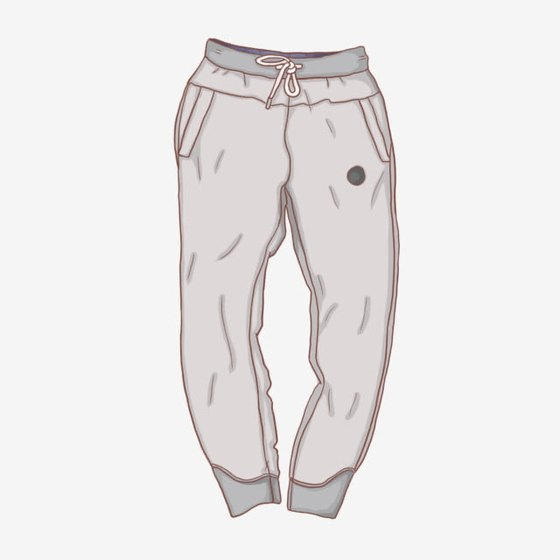
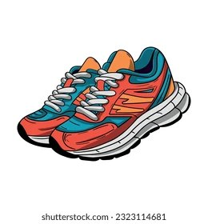
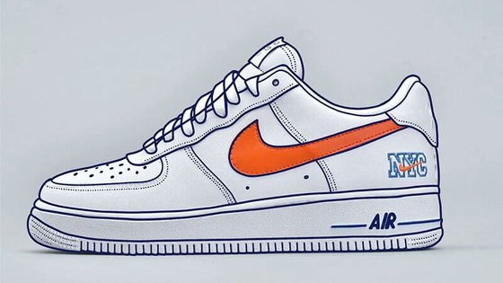
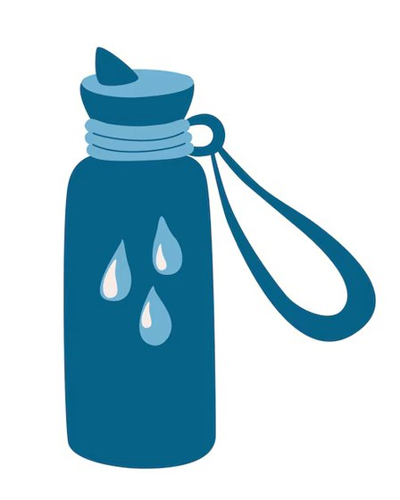
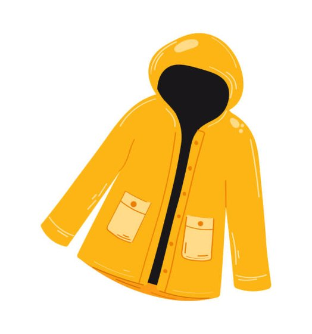
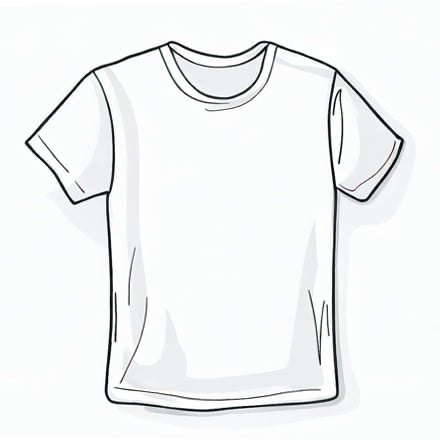
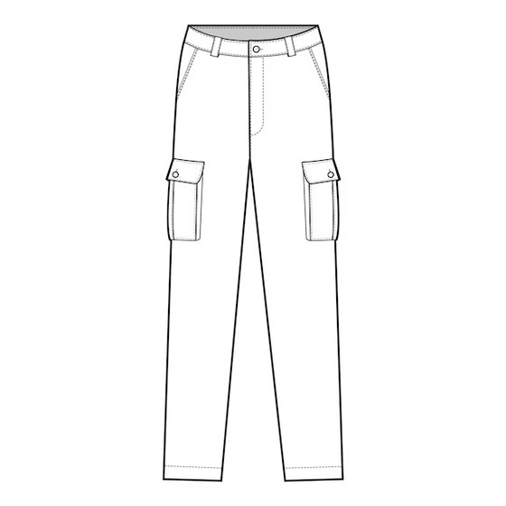

Organisation & règlement
Fonctionnement de l'EPS
Tout ce qu'il faut savoir pour bien vivre le cours d'EPS, quel que soit votre niveau.

- Ma tenue d'EPS
- Inaptitudes à la pratique de l'EPS
- Les trajets
- Organisation de l'EPS
- Dates importantes
- L'Association Sportive
- Documents à télécharger
👕 Ma tenue d'EPS
Par souci d'hygiène et de sécurité, chaque élève doit être muni d'une tenue d'E.P.S. (soit un survêtement, short ou t-shirt de sport, et une paire de chaussures adaptée à la pratique d'une activité physique). Les cheveux doivent être attachés pour toutes pratiques sportives.
Pour la pratique des A.P.S.A. en extérieur, les élèves doivent se munir de vêtements adaptés aux conditions météorologiques (vêtements chauds, casquette, crème solaire...). Un temps sera laissé aux élèves dans les vestiaires au début et à la fin des cours afin qu'ils puissent se changer. L'intimité des élèves est préservée lors de leur passage dans les vestiaires mais, s'il le juge utile, le professeur se garde le droit d'intervenir afin d'assurer la sécurité de tous (cf. Article 44 du règlement intérieur).
Chaque élève doit être en possession de sa gourde pleine avant le début du cours.
Mon jogging

⚠️ Les jeans élastiques ne sont pas une tenue pour faire du sport ⚠️
Mes chaussures pour faire du sport

✅ Privilégier les baskets avec une grosse semelle

❌ Éviter les baskets avec une semelle plate
Ma gourde REMPLIE

J'anticipe le remplissage de ma gourde avant de venir en EPS (pendant la récréation)
Des vêtements adaptés à la météo 🌦️

K-way


Tenue de rechange
En cas d'oubli de tenue
- L'élève a le droit à un joker pour le premier oubli.
- L'élève a une observation pour le deuxième oubli.
- L'élève a une retenue pour tous les autres oublis suivants, sauf justifications écrites de la famille.
🩺 Inaptitudes à la pratique de l'EPS
Les cours d'E.P.S. sont obligatoires au même titre que tous les autres cours, y compris en cas d'inaptitude partielle ou totale.
📅 Inaptitudes ponctuelles (une séance)
Article 34 du règlement d'EPS
Les demandes de dispenses ponctuelles doivent être exceptionnelles et doivent être formulées auprès du professeur d'E.P.S par les responsables légaux.
- Les élèves sont tenus de participer au cours.
- Un même élève ne peut faire l'objet de plusieurs demandes de dispense ponctuelles consécutives. Ces dispenses seront notifiées sur PRONOTE si la demande est faite par la famille. Si ces demandes sont trop nombreuses, la famille sera convoquée par Madame la principale afin d'évaluer la situation.
Comment prévenir d'une dispense ponctuelle ?
🩹 Inaptitudes médicales (avec certificat d'un médecin) de moins de 2 mois
Article 35 du règlement d'EPS
- Les élèves sont tenus de participer au cours.
- Au regard de la nature de leur inaptitude, ils auront des tâches à accomplir.
Afin de renseigner au mieux le professeur d'EPS d'une inaptitude, celle-ci doit faire l'objet d'un certificat médical. Le modèle-type de certificat d'inaptitude est présenté aux familles sur l'ENT et un exemplaire est distribué aux élèves en début d'année. Il doit servir de référence pour le médecin.
Ainsi le professeur d'EPS peut proposer aux élèves inaptes un enseignement et une évaluation adaptés à leurs possibilités. Ceux-ci s'engageront alors dans une activité motrice tenant compte de leurs incapacités ou dans des rôles sociaux (observateur, coach, arbitre…) qui font partie des programmes nationaux d'EPS.
- Toute absence au cours ne pourra être justifiée par la dispense médicale (inaptitude physique).
Le certificat médical à faire remplir par le médecin
🏥 Inaptitudes médicales (avec certificat d'un médecin) de plus de 2 mois
Article 36 du règlement d'EPS
Le seul cas de dispense de cours d'EPS concerne les élèves qui ont une inaptitude totale supérieure à 2 mois.
- Les élèves ne participent pas au cours.
- Leur absence marquée par l'enseignant d'EPS sera donc justifiée.
🚌 Les trajets
Au collège, tous les trajets en bus pour se rendre aux installations sportives de la ville sont encadrés par le professeur d'E.P.S. en charge du cours. Ainsi, tous les élèves doivent partir du collège avec leur enseignant à l'heure du début du cours, et revenir jusqu'au collège avec leur enseignant pour l'heure de la fin du cours. Aucun élève n'est donc autorisé à se rendre ou à quitter seul les installations sportives.
Pendant ces déplacements, les élèves doivent se conformer strictement aux consignes de sécurité et instructions données par le professeur. Il est en particulier demandé aux élèves de ne pas utiliser le téléphone portable ou tout autre objet connecté pendant les trajets en bus (cf. Articles 74 à 79 du règlement intérieur).
🗓️ Organisation de l'EPS
⏰ La répartition des horaires par niveau de classe
| Niveau de classe | Horaire hebdomadaire d'EPS |
|---|---|
| 6ème | 4 heures par semaine |
| 5ème | 3 heures par semaine |
| 4ème | 3 heures par semaine |
| 3ème | 3 heures par semaine |
Où ont lieu les cours ?
Les cours se déroulent principalement sur le plateau du collège lors de la première période de l'année (de la rentrée aux vacances de la Toussaint), puis lors de la dernière période (des vacances de Pâques à la fin de l'année). Il se peut cependant que certaines classes aient également des cours sur le plateau en hiver.
En hiver, nous utilisons les installations de la ville, soit deux gymnases : celui du centre-ville et celui situé à côté de Bovo et fils.
🏅 La programmation par niveau
Les activités sur fond gris foncé sont celles qui se déroulent dans les installations de la ville (les deux gymnases). Les autres ont lieu sur le plateau du collège.
| 6ème | 5ème | 4ème | 3ème |
|---|---|---|---|
| Triathlon athlétique | Handball | Boxe française | Boxe française |
| Handball | Ultimate | Rugby flag | Rugby flag |
| Ultimate | Biathlon | Badminton | Badminton |
| Course d'orientation | Badminton | Basket-ball | Basket-ball |
| Badminton | Tennis de table | Relais vitesse 2x40m | Relais vitesse 3x40m |
| Danse | — | — | Cross training |
| Tennis de table | — | — | — |
📋 Les règles de fonctionnement du cours
Les toilettes présentes dans les vestiaires ne doivent être utilisées qu'en cas d'urgence ou à la fin du cours. Il est attendu des élèves qu'ils respectent ces lieux publics. Pour rappel, « chacun au collège porte une part de la responsabilité de l'état des espaces communs (locaux éducatifs, couloirs, toilettes, salles de travail ou de loisirs, cour et accès…) qui doivent être maintenus propres et en ordre, dans l'intérêt de tous. (…) Il est rappelé à chacun que la dégradation volontaire de matériel et le vol constituent des délits aux yeux de la loi » (cf. Article 70 du règlement intérieur). Les enseignants se donnent le droit de fermer temporairement les toilettes si les règles ne sont pas respectées.
Les élèves ne doivent pas se rendre seuls aux vestiaires sauf demande particulière de l'enseignant et doivent attendre à l'extérieur afin de ne pas déranger le bon fonctionnement des autres cours.
Nous rappelons que les chewing-gums sont interdits (cf. Article 70 du règlement intérieur) et doivent-être jetés avant le début du cours (les trajets en bus font partie du cours). Les punitions associées suivent la même logique que pour les oublis de tenue.
Les élèves doivent être attentifs à lacer correctement leurs chaussures avant de pratiquer. Ils sont d'ailleurs obligés de garder leurs chaussures pendant toute la durée de la leçon.
Nous vous informons aussi qu'en cas de conditions météorologiques défavorables à la pratique sportive en plein air (pluie, neige, canicule…), une solution de repli sous le préau avec une activité adaptée sera mise en place.
📌 Dates importantes de l'EPS
Les temps forts de l'année en EPS, à noter dès maintenant dans l'agenda.
- Jeu. 3 septembre Journée d'intégration des 6èmes
- Mer. 16 septembre Matinée du sport scolaire
- Mar. 6 octobre Intervention du comité handisport
- Jeu. 15 octobre Cross solidaire du collège
- Mer. 4 novembre Journée de formation Arbitrage
- Mer. 18 novembre Cross départemental
🏆 L'Association Sportive (AS)
L'association sportive (AS) du collège permet de pratiquer des activités physiques et sportives en dehors des heures de cours, sur la pause méridienne, encadrée par les professeurs d'EPS.
Le fonctionnement de l'AS
| Jour | Activité | Encadrant |
|---|---|---|
| Lundi | Futsal | Mme Rattin |
| Lundi | Basket féminin | M. Allard |
| Mardi | Rugby Flag | Mme Baup |
| Mardi | Futsal | Mme Rattin |
| Jeudi | Handball féminin | Mme Baup |
| Jeudi | Futsal féminin | Mme Rattin |
| Vendredi | Basket | M. Allard |
| Vendredi | Rugby Flag | Mme Baup |
- Horaire : 13h–13h50 (pause méridienne)
- Lieu : plateau sportif du collège
Comment s'inscrire ?
- Remplir la feuille d'inscription et la rendre à l'enseignant responsable de l'activité choisie.
- Payer la cotisation annuelle : 30 € (–50 % pour la 2e inscription au sein d'une même famille).
- Faire signer le règlement de l'AS au dos de la feuille d'inscription (élève et responsable légal).
L'adhésion permet de pratiquer autant d'activités que souhaité et de participer aux compétitions scolaires du mercredi après-midi (facultatif), avec transport en car et encadrement par les professeurs d'EPS.